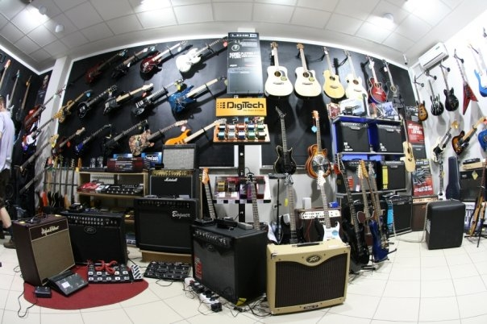
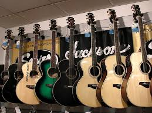
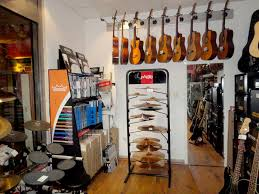
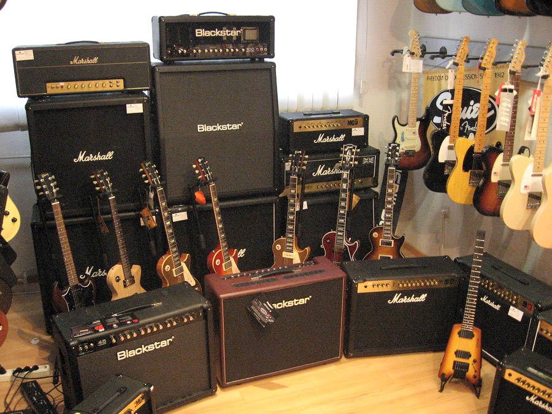

ARTIST d.o.o. Centar Muzičkih Instrumenata i Studijske Opreme
Ivana Gorana Kovačića 203a
78000 Banjaluka
Bosna i Hercegovina
tel: +387 51 370 627
fax: +387 51 371 977
Artist d.o.o. već 12 godina uspješno posluje sa muzičarima i profesionalcima u audio biznisu u BiH i šire. Broadcast, ozvučenja, rsvjeta, procesori, studijska oprema, DJ oprema, bubnjevi, klavijature, gitare, pojačala...
Mitros Music
Admirala Geprata 10
011 / 36 17 668; 10h-20h
Posjetite nas www.mitrosmusic.com
ARTIST d.o.o. Centar Muzičkih Instrumenata i Studijske Opreme
Poslovna jedinica Sarajevo
Tešanjska 3
71000 Sarajevo
Artist d.o.o. već 13 godina uspješno posluje sa muzičarima i profesionalcima u audio biznisu u BiH i šire. Broadcast, ozvučenja, rasvjeta, procesori, studijska oprema, DJ oprema, bubnjevi, klavijature, gitare, pojačala...
Euro Unit
Link: http://euro-unit.hr/
Lokacija:Hvarska 46
Ponuda:
Zastupnici Yamahe, tako da drže ili mogu naručiti bilo što iz Yamahinog bogatog asortimana. Gitare, Bubnjevi, Klavijature, Klaviri, puhački instrumenti, pro audio itd.
Orange Pojačala
Beyerdynamic mikrofoni i daljinci.
Selmer puhački instrumenti.
Gator HQ koferi i torbe.
Istanbul činele.
Electro Harmonix pedale i lampe za lampaška pojačala.
Perkusije, bubnjaska oprema, ostali pribor
